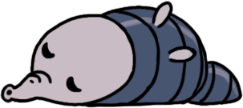
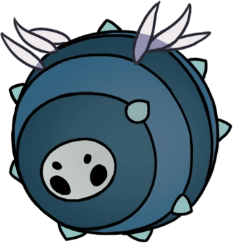
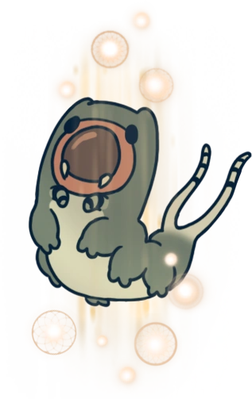

Jefes Principales (no hay orden especifico)
Jefes del Juego Base
| Nombre | Diario del Cazador |
|---|---|
Falso caballero

|
Un gusano al que una fuerza extraña ha vuelto loco. Vive en una coraza blindada robada. A las criaturas débiles les encanta robar la fuerza de los demás. Sus vidas son efímeras y están llenas de miedo, pero anhelan tener el poder para dominar a quienes los han dominado. |
| Madre gruz  |
Gruzzer maduro que lleva a sus crías en la barriga. Ataca lanzándose con su enorme cuerpo. Sorprendentemente, este monstruo no pone huevos, sino que lleva a sus crías dentro de su gordo estómago. Esta extraña práctica parece agotar a la criatura, que queda adormilada y vulnerable. ¡Aprovecha ese momento! |
Mawlek incubador

|
Una criatura feroz, aunque extremadamente social. Se vuelve agresiva si no puede relacionarse con los de su propia especie. Escucho a esta bestia gritar a veces mientras merodeo las cavernas, aunque nunca he posado mis ojos en ella. ¿A quién o qué está llamando? Por lo que yo sé, sus bramidos nunca obtienen respuesta. |
Hollow Knight

|
Receptáculo adulto que encierra al corazón de la plaga en su cuerpo. El antiguo Rey de Hallownest... llegó a tomar medidas desesperadas para salvar su pequeño mundo. Obligó a muchos a realizar tremendos sacrificios... y todo para nada. |
EL DESTELLO

|
La luz, olvidada hace mucho. La plaga, la infección, la locura que reanima los cadáveres de Hallownest... el brillo que surge de los ojos de un reino muerto. ¿De dónde procede? Supongo que es algo que está más allá del entendimiento de mortales como yo. |
Rey vengamosca

|
El patriarca de la colonia de las vengamoscas. Se abalanza en picado sobre los intrusos y llama refuerzos si se ve amenazado. Una asquerosa criatura a la que le gusta masticar cualquier porquería que encuentre tirada en el suelo de la caverna. Cuando se percata de una amenaza, emitirá molestos gritos y chillidos, así que mátalo rápido. |
Hornet

|
Hábil protector de las ruinas de Hallownest. Empuña una aguja e hilo. He visto a esta pequeña criatura ágil. Pensé que era su presa y me abalancé sobre ella, pero con un destello me apuñaló con su aguijón volador y se alejó corriendo. ¿Podría ser... ¿Un cazador? |
| Señores Mantis | Son los líderes de la tribu mantis, y sus mejores guerreros. Portan finas lanzas aguijón, y atacan con la velocidad del rayo. La tribu mantis y los insectos de Hallownest no se llevaban demasiado bien. Sin embargo, las mantis consiguieron sobrevivir a sus rivales, y su civilización aún perdura. |
| Maestro de almas |
Líder del Santuario de Almas. Acumuló alma con la esperanza de mantener a raya el infortunio de Hallownest, pero terminó intoxicándose de su poder. Los insectos de Hallownest probaron todo tipo de trucos, rituales y plegarias para deshacerse de la infección. ¡Pero nada les dio resultado! Quizás la infección provenía de algo en su interior de lo que no podían escapar. |
Caballeros vigias

|
Coraza de un Caballero vigía, reanimada por un enjambre de moscas infectadas. Cuando estos silenciosos guerreros caen en batalla, sus cuerpos se abren y de ellos salen volando extraños insectos. Me pregunto qué saldrá volando de mí cuando muera. ¿Mis esperanzas y mis miedos saldrán disparados hasta perderse en la oscuridad? |
| El coleccionista |
Esta sombra tenebrosa está encerrada en la Torre del Amor. Conserva a las criaturas de Hallownest en jarras de cristal, aunque está particularmente interesada en las larvas. Una sombra que se desliza por las cavernas realizando extraños sonidos. Nunca la he visto con claridad, así que no sé qué tipo de criatura es. |
Guardián de cristal
|
Corpulento minero de la Cumbre de Cristal cuyo cuerpo se ha visto superado por los cristales que le han crecido. Puede lanzar rayos de luz abrasadores desde sus extremidades cristalizadas. ¿Cómo verá el mundo esta criatura que lo mira a través de su prisión de cristal? ¿Solo ve luz? ¿Es eso lo que lo enloquece de esa forma? |
Defensor del estiercol

|
Un hábil guerrero que vive en el corazón de los Canales. Ataca a los intrusos con esferas compactas de estiércol. Luchar por «honor» o por «lealtad»... es lo mismo que luchar por cenizas. Si quieres matar, hazlo por tu propio bien. Así se comporta un auténtico cazador. |
Tremarmita

|
Un reproductor insaciable. Ha poblado los Canales con los de su especie. Sus entrañas actúan como un nido para las jóvenes tremacrías. El deseo de reproducirse, de dejar atrás un recuerdo de nosotros en forma de un descendiente... parece estar bien impregnado en el corazón de toda criatura viva. Yo también he sentido el reclamo de ese instinto básico. |
| Nosk |
Adopta la forma de otras criaturas para atraer presas a su guarida. En la oscuridad más profunda hay bestias con rostros robados de tu memoria que tratan de controlarte manipulando tus sentimientos. Conócete a ti mismo y no te dejes engañar. |
| Receptáculo Roto |
Cadáver destrozado, reanimado por parásitos infectados. La forma de esta criatura... He visto algo similar antes. Más de una vez, incluso. Se parece un poco a los insectos de Hallownest, pero no es exactamente igual. ¿De dónde han venido estos pequeños errantes vacíos? |
Hornet centinela

|
(misma que Hornet) |
| Zote el todo Poderoso |
Se ha autoproclamado caballero. Carece de prestigio. Blande un aguijón hecho de maderarmazón al que llama «Terminavidas». Existen ciertas criaturas que son tan débiles, inútiles, ineptas e irritantes que cazarlas pierde todo el interés. |
| Oblobble  |
Primo mayor del Obble. Se empareja con una pareja de por vida y nunca se apartará de su lado. Tener un compañero a tu lado... uno que nunca te dejará hasta la muerte. Extraño. Ningún compañero ha salido a quedarse a mi lado... |
| Domador de Dioses |
Una guerrera veterana del Coliseo de los Insensatos. Lucha junto a las criaturas que ha entrenado. Algunos cazadores entrenan a bestias para que les acompañen cuando van tras sus presas. Una vez lo intenté, pero no pude resistir la tentación de comparar la fuerza de mi compañero con la mía. |
| Uumuu |
Ser inteligente que custodia la cámara interior de los Archivos del Maestro. El cañón debajo de nosotros, el espeso de niebla y crepitante con una energía extraña ... un cazador puede perder el sentido allí abajo. Ten cuidado... Allí acechan cosas extrañas y antinaturales. |
| Señor desleal | Cacique destituido de la tribu mantis. Decidió aceptar la infección y se volvió contra sus hermanas. Yo también he sentido esa tentación. La tentación de dejar que la infección entre en mí. Sería más fuerte, más poderoso... esas ideas siguen emponzoñando mis sueños durante los momentos difíciles. Es una mentira, pero brilla tanto que puede confundir tu mente. |
Caballero colmena

|
Protector leal de la Reina de la Colmena. No puede volar pero es feroz en combate. Algunas criaturas nacen con deberes y lealtades marcadas imborrablemente en sus mentes. Son fuertes, pero también son esclavos. |
Jefes de Expansiones
DLC
| Nombre | Diario del Cazador |
|---|---|
| Invencible, Audaz, Sensual, Misterioso, Encatador, Vigoroso, Diligente, Abrumador, Espléndido, Apasiosanado, Terrorífico, Bello, Poderoso, Príncipe Gris Zote |
Producto de una mente obsesionada. Falto de gracia pero se vuelve más fuerte con cada derrota. Amor mío, cualquier criatura que pueda mantenerse lejos de tí, que voluntariamente te deje atrás o te diga cosas desagradables... ¡Bah! ¡Pobres gusanos, no merecen ni quedarse bajo tu gloriosa sombra! Ella sintió su frío cuerpo calentarse,una sensación que casi había olvidado... -《El Príncipe Gris》Capítulo 112 |
Grimm

|
Maestro de la Compañía de Grimm Por la llamada de la linterna, a través de sueños yo viajo A consumir las llamas de un reino hecho pedazos. - Grimm |
| Rey Pesadilla Grim, |
Espectro retorcido de la llama escarlata. La expansión del sueño separada en el pasado, y un reino deberá estar alejado, El rojo latente, los extremos más apagados. El corazón de la pesadilla. El sueño aterrorizado. - Vidente |
| Defensor Blanco |
Figura de un pasado recordado con afecto. Reacciona galantementeante la derrota volviéndose mas fuerte. La llamada del campeón, la arboleda enredada, la batalla del Wyrm Negro... Lo recuerdo todo. Me llevaré esa gloria conmigo siempre... hasta que nos volvamos a encontrar. - Ogrim de los Cinco Caballeros |
| Hermanos Oro y Mato |
Hermanos del aguijón, entrenados en combate por el gran Sabio del aguijón. "Dioses por trabajo y aguijón vinculados, Hermanos que al débil protejen bajo juramento, Maestros de terrenos sagrados, ¡Ayúdanos a encontrar a un Dios en nuestro intento!" - Oración a los Maestros |
| Maestro de Pintura Sheo |
Habilidoso y respetado maestro del aguijón. Siempre entusiasmado por aprender cosas nuevas. "¡Oh Dios inspirado, maestro de las artes, Cuyos trabajos deben perdurar en el futuro, Mira más allá de nuestros corazones y mentes, Revélanos el dios más puro!" - Oración al Artista |
| Gran Sabio del Aguijón Sly |
Legendario sabio de las artes del aguijón y recientemente; mercader con algo de éxito "¡Sabio Dios del astuto y el audaz, Afila nuestros aguijones y las probabilidades muéstranos, Oh gran maestro, déjanos observar, A aquel aun mas grande, al más poderoso Dios!" Oh gran maestro, déjanos observar, A aquel aun mas grande, al más poderoso Dios!" - Oración al Sabio |
| Vasija Pura |
Vasija elegida, criada y entrenada para su forma primigenia. "¡El más profundo silencio en coraza sagrada, recibió el aguijón y fue nombrado caballero, vasija hechizada en un huevo, sellada, Escucha nuestra plegaria! ¡Tu Luz queremos ver revelada!" - Oración a la Vasija |
| Nosk alado | (la misma que Nosk) |
| Hermanas de batalla | (la misma que señores mantis) |
EL DESTELLO ABSOLUTO

|
(la misma que EL DESTELLO) |
Jefes Secretos
Guererros oniricos
| Nombre | Diario del cazador |
|---|---|
Campeón fallido

|
Los miembros más débiles del reino de Hallownest. Se les solía menospreciar y obligar a hacer trabajos de baja categoría. Estas indefensas criaturas, compuestas principalmente de grasa dulce, son unas provisiones excelentes para largos viajes. Están más buenos asados en una hoguera. Si tratan de negociar por sus vidas, ignóralos. No tienen nada que ofrecer.(use la del gusano porque el campeon fallido es eso un gusano) |
Sin ojos

|
Sueño persistente de un guerrero caído. Desapareció durante la plaga. Se están acercando... Lo que tienes en tu interior... ¡Sácalo! -Sin Ojos |
Tirano de Almas

|
(la misma que el Maestro de Almas) |
| Xero |
Sueño persistente de un guerrero caído. Ejecutado por crímenes contra el Rey. Una vida definida por la tragedia y el triunfo. Una muerte empañada por el dolor y el arrepentimiento. Un espíritu cargado de pecados y recuerdos. Es mejor vagar por el mundo que ser maldecido con gloria. – Xero |
Gorb

|
Sueño persistente de un guerrero caído. Una misteriosa forma de vida que afirmaba contener todo el conocimiento del mundo dentro de su cerebro distendido. ¡Soy Gorb! – Gorb |
Galien

|
Sueño persistente de un guerrero caído. Entrenado en la naturaleza que bordea el reino, con la esperanza de convertirse en un Caballero. Un Caballero se esfuerza no solo por proteger la tierra y su gente, sino también las esperanzas y los sueños del reino. – Galien |
| Familiar Perdido | (la misma que el Receptáculo Roto) |
Markoth

|
Sueño persistente de un guerrero caído. Único miembro de su tribu olvidada en tomar un arma. Que tus esfuerzos te lleven a algún lugar digno. – Markoth |
| Marmuu  | Sueño persistente de un guerrero caído. Protector de los Jardines de la Reina. Si crees en algo tan duro como puedas, con los ojos bien cerrados... ¡Eventualmente se hará realidad! – Marmu |